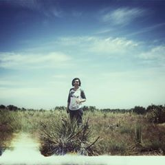

|  | Bernarda PierceEnvironmental Scientist and Front End Web Developer. |
Hi, my name is Nancy Bernarda Pierce and for as long I can remember, I have loved the great outdoors. I grew up in the country of Ecuador, which helped mold me and gave me a deep appreciation for the environment. I could never get enough of the wide-open spaces. Weekend trips to parks, forests, lakes and other natural areas around the country were all part of my everyday life.
After high school I attended college and graduated with a degree in biology. I became a park ranger in an urban park. After a while, I grew restless and felt I could do more and moved to Denver Colo., to pursue a degree in environmental science. Upon completing my undergraduate coursework, I was accepted to the graduate program for environmental science at the University of Colorado Denver. During that time, I enjoyed volunteer work and internships that shaped my skill sets and strengthened my passion for the environment.
Recently, I experinced the joy of coding and found a new pasion that is taking me to the the path of web development. Currently I'm working towards a Master;s Certificate in Web Design and Development.
| Dates | Work |
|---|---|
| 2018 - Present | Community Business Coordinator at Barnes and Noble |
| Summer 2016 | Southern Hill Country Globe Intern |
| HTML | ★★★☆☆ | CSS | ★★★☆☆ |
| JS | ★★☆☆☆ | BootStrap | ★★☆☆☆ |
| User Centered Design Techniques | ★★★★☆ | Wireframing/Prototyping | ★★★★☆ |